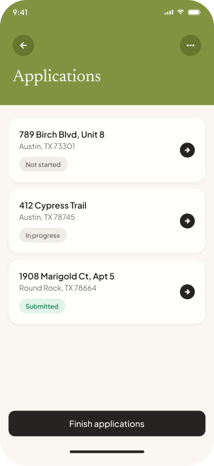
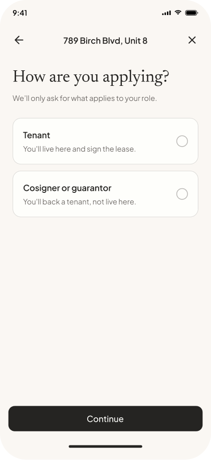
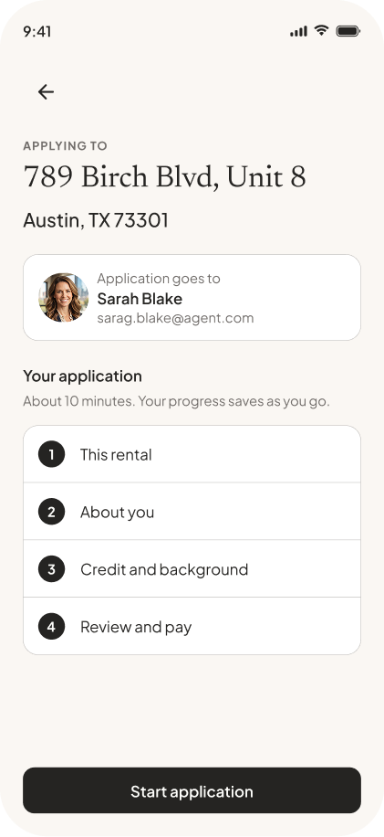

Scroll
Business impact
RentSpree has other revenue streams, including agent subscriptions and landlord services. But applications carry most of the transactions and most of the revenue. Improving completion here has a direct effect on the business.
The redesign focused on helping more applicants finish and improving the information agents receive. It also created a path from the first application payment to deposits and rent after approval.



The problem
A rental application rarely happens in one sitting. Applicants stop to find documents, confirm details, or come back later. The old flow didn't tell them how much was left or where they should resume.
Applicants sometimes discovered a typo or outdated information only after their credit or background reports came back. By then the reports had already been run, with no clear opportunity to correct the source information.
Applicants couldn't tell when their application and reports had been sent to the agent. The experience looked finished while important review and confirmation steps still remained.
Arc one
Reducing the number of steps helped, but the bigger change was giving the application a visible structure. The overview shows everything that remains, keeps completed work visible, and lets applicants edit finished sections without retracing the flow.
It also gives people a clear place to return. That matters for something usually completed over several sittings.
Moment one
Moment two
Conditional questions open inline instead of adding new steps to the application. This keeps the progress model stable as the form changes.
The household section also required a compliance decision. The number of children under 18 stays subordinate and optional rather than appearing as a category alongside adults and pets. This reduces the risk of creating a familial-status signal.
That decision was separate from conversion. It was simply the safer way to handle the information.
Arc two
This came from support. Applicants were contacting us after submission because something in their credit or background report was wrong. Often, the source was information they had entered themselves: a misspelled legal name, an old address, or a transposed digit.
The flow never gave them a clear moment to check everything.
Once the mistake appeared in a report, the report had already been pulled. Field validation wouldn't catch every error, so applicants needed a full review before anything was sent to the bureau.
Arc three
Applicants now review their information before paying, so errors can be corrected before reports run. Moving payment later created some drop-off, but the submissions that made it through were more complete. It also makes the reusable package easier to understand after applicants have experienced the full application.
Outcome
After payment, applicants can see their reports being prepared, review them, and choose when to send the application. “Submit application” marks the handoff to the agent, and the overview confirms the property is complete. Saving the card also makes the next steps easier, from the deposit through recurring rent.
To improve completion, we needed to know exactly where applicants were leaving. I worked with engineering to add tracking across the new flow so we could see which sections were causing problems and what changed after each release.
Using Claude Code and our design system, I built the application as a working prototype instead of a series of static screens. That let me focus on the UX, content, structure, and workflow while design, product, and engineering reviewed the complete experience together.
Clearer reports help agents and landlords screen with more confidence. Once someone is accepted, a saved payment method makes it easier to move into deposits and rent, beginning the landlord-tenant relationship.